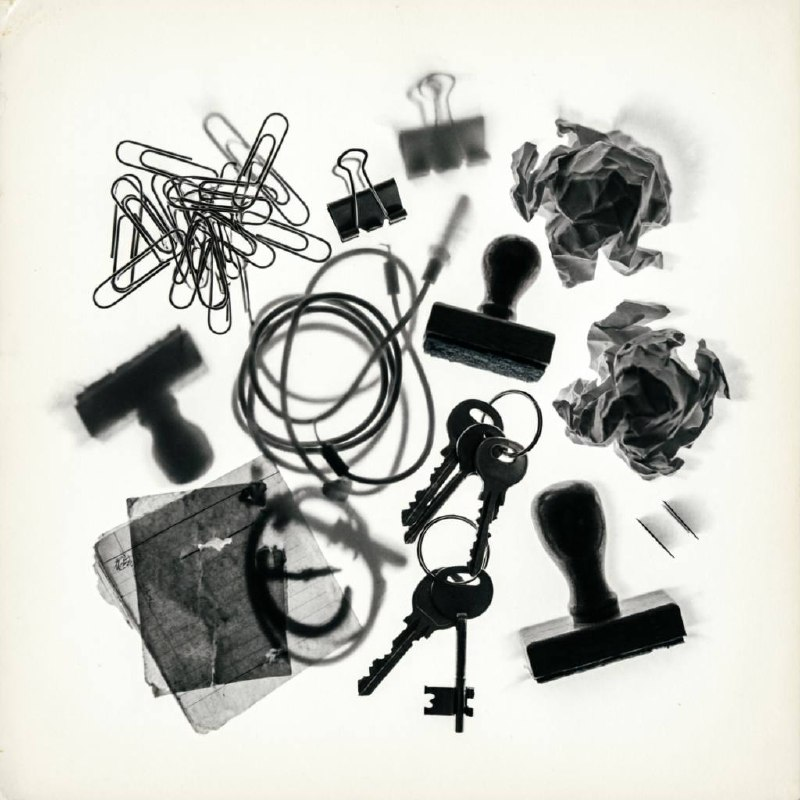

A photogram cuts photography down to its nerve. You place an object on light-sensitive paper, expose it, and let light print the silhouette, translucency, edge, and pressure of the thing itself. No lens. No camera body. No alibi. The result can read like science class, occult diagram, modernist design, or a record of touch.

William Henry Fox Talbot made what he called “photogenic drawings” in the 1830s by laying lace, leaves, and other flat objects on sensitized paper and carrying them into sunlight. He used the method to test photography before the camera negative settled into dominance. In practical terms, the photogram belongs to photography’s first generation, not its avant-garde afterlife.
Anna Atkins pushed the form into science. After Sir John Herschel introduced the cyanotype process in 1842, Atkins used it to record algae specimens with a taxonomic calm that still feels radical. Her 1843 book Photographs of British Algae: Cyanotype Impressions sits near the start of the photo book as a form. It also proves that a direct print can serve evidence and beauty at the same time.
In the twentieth century, artists stopped treating the photogram as proof and started treating it as argument. Man Ray named his versions “rayographs” and made shadows feel witty, sharp, metropolitan. László Moholy-Nagy used the photogram at the Bauhaus to ask what light itself could construct when a camera stopped dictating the frame. Both artists understood the photogram as a machine for thinking. It stripped representation down to contact, interval, transparency, and scale.
Talbot made leaves, lace, and fabric do the talking. Look at how he trusted simple objects with complicated edges. He let detail carry wonder.
Atkins turned specimen recording into one of the most elegant bodies of nineteenth-century image-making. Her cyanotypes carry the discipline of science and the restraint of good design.
Man Ray liked hard contrast, surprise, and collision. His prints make ordinary objects look theatrical. They flirt. They pose. They know the room.
Moholy-Nagy cared about light as structure. His photograms teach you to look at transparency, overlap, and depth as building materials, not decoration.
A photogram exposes the politics of seeing. Cameras usually flatter perspective, crop reality, and make us forget the device. A photogram refuses that comfort. It tells you that an image can begin with contact. It tells you that scale can lie. It tells you that a translucent thing can print more forcefully than a solid one if light travels through it in the right way.
That is why the form keeps returning when artists want to test photography at its root. The photogram asks a brutal question: if you remove the camera, do you still have a photograph? History answered yes a long time ago.
You need one specialized material: cyanotype paper or sunprint paper. Everything else can come off a desk.
Start with contrast. Put one opaque object, one translucent object, and one open grid object on the sheet. A binder clip gives you a hard silhouette. Transparent tape gives you a pale veil. A mesh pen cup or cut section of office netting gives you rhythm. Keep the composition simple for the first pass. Photograms punish greed.
Then do the real work. Repeat the image with one change at a time. Swap paper clips for cable ties. Add tracing paper under a grid. Lift one edge so a shadow softens. Photograms reward controlled variation more than novelty. Treat your desk like a lab bench.
If you want one strong first study, try this: two binder clips, one strip of transparent tape, a key, three hole reinforcements, and the wire basket shadow from a pen cup. You will get hard black, pale halos, open circles, and one field of repeated geometry. That is enough to understand why the medium survived from Talbot to the Bauhaus and beyond.